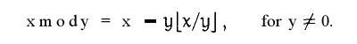

原码、补码、反码详解
数在计算机中的编码方式是
补码
本篇文章讲解了计算机的原码, 反码和补码. 并且进行了深入探求了为何要使用反码和补码, 以及更进一步的
论证了为何可以用反码, 补码的加法计算原码的减法. 论证部分如有不对的地方请各位牛人帮忙指正! 希望本
文对大家学习计算机基础有所帮助!
一. 机器数和真值
在学习原码, 反码和补码之前, 需要先了解机器数和真值的概念.
1. 机器数
一个数在计算机中的二进制表示形式，叫做这个数的机器数。
机器数是带符号的，在计算机用一个数的最高位存放符号, 正数为0, 负数为1。
例:
1. 十进制数 +3，计算机字长为8位，转换成二进制就是00000011(机器数)
2. 十进制数 -3，计算机字长为8位，就是 10000011(机器数)
2. 真值
因为第一位是符号位，所以机器数的形式值就不等于真正的数值。
例如上面的有符号数 10000011，其最高位1代表负，其真正数值是 -3，而不是形式值131（10000011转换成十进制等于131）。
所以，为区别起见，将带符号位的机器数对应的真正数值称为机器数的真值。
例:
1. 0000 0001的真值 = +000 0001 = +1
2. 1000 0001的真值 = –000 0001 = –1
二. 原码, 反码, 补码的基础概念和计算方法.
在探求为何机器要使用补码之前, 让我们先了解原码, 反码和补码的概念.
对于一个数, 计算机要使用一定的编码方式进行存储.
原码, 反码, 补码是机器存储一个具体数字的编码方式.
1. 原码
原码就是符号位加上真值的绝对值, 即用第一位表示符号, 其余位表示值.
比如如果是8位二进制:
[+1]原 = 0000 0001
[-1]原 = 1000 0001
第一位是符号位. 因为第一位是符号位, 所以8位二进制数的取值范围就是:
[1111 1111 , 0111 1111] 即[-127 , 127]
原码是人脑最容易理解和计算的表示方式.
2. 反码
反码的表示方法是:
正数的反码是其本身
负数的反码是在其原码的基础上, 符号位不变，其余各个位取反.
[+1] = [00000001]原 = [00000001]反
[-1] = [10000001]原 = [11111110]反
可见如果一个反码表示的是负数, 人脑无法直观的看出来它的数值.
通常要将其转换成原码再计算.
3. 补码
补码的表示方法是:
正数的补码就是其本身
负数的补码是在其原码的基础上, 符号位不变, 其余各位取反, 最后+1. (即在反码的基础上+1)
[+1] = [00000001]原 = [00000001]反 = [00000001]补
[-1] = [10000001]原 = [11111110]反 = [11111111]补
对于负数, 补码表示方式也是人脑无法直观看出其数值的.
通常也要转换成原码再计算其数值.
三. 为何要使用原码, 反码和补码表示数
在开始深入学习前, 我的学习建议是先"死记硬背"上面的原码, 反码和补码的表示方式以及计算方法
现在我们知道了计算机可以有三种编码方式表示一个数.
正数：三种编码方式的结果都相同
[+1] = [00000001]原 = [00000001]反 = [00000001]补
负数：三种编码方式的结果都不同
[-1] = [10000001]原 = [11111110]反 = [11111111]补
可见原码, 反码和补码是完全不同的. 既然原码才是被人脑直接识别并用于计算表示方式, 为何还会有反码和补码呢?
首先, 因为人脑可以知道第一位是符号位, 在计算的时候我们会根据符号位, 选择对真值区域的加减. (真值的概念在本文最开头). 但是对于计算机, 加减乘数已经是最基础的运算, 要设计的尽量简单. 计算机辨别"符号位"显然会让计算机的基础电路设计变得十分复杂!
于是人们想出了将符号位也参与运算的方法. 我们知道, 根据运算法则减去一个正数等于加上一个负数, 即: 1-1 = 1 + (-1) = 0 , 所以机器可以只有加法而没有减法, 这样计算机运算的设计就更简单了.
于是人们开始探索 将符号位参与运算, 并且只保留加法的方法.
原码：
首先看原码
计算十进制的表达式: 1-1=01 - 1 = 1 + (-1) = [00000001]原 + [10000001]原 = [10000010]原 = -2如果用原码表示, 让符号位也参与计算, 显然对于减法来说, 结果是不正确的.这也就是为何计算机内部不使用原码表示一个数.
反码
为了解决原码做减法的问题, 出现了反码:
计算十进制的表达式: 1-1=01 - 1 = 1 + (-1) = [0000 0001]原 + [1000 0001]原 = [0000 0001]反 + [1111 1110]反 = [1111 1111]反 = [1000 0000]原 = -0发现用反码计算减法, 结果的真值部分是正确的. 而唯一的问题其实就出现在"0"这个特殊的数值上. 虽然人们理解上+0和-0是一样的, 但是0带符号是没有任何意义的. 而且会有[0000 0000]原和[1000 0000]原两个编码表示0.
补码
于是补码的出现, 解决了0的符号以及两个编码的问题:1-1 = 1 + (-1) = [0000 0001]原 + [1000 0001]原 = [0000 0001]补 + [1111 1111]补 = [0000 0000]补=[0000 0000]原这样0用[0000 0000]表示, 而以前出现问题的-0则不存在了.而且可以用[1000 0000]表示-128:
(-1) + (-127) = [1000 0001]原 + [1111 1111]原 = [1111 1111]补 + [1000 0001]补 = [1000 0000]补
-1-127的结果应该是-128, 在用补码运算的结果中, [1000 0000]补 就是-128. 但是注意因为实际上是使用以前的-0的补码来表示-128, 所以-128并没有原码和反码表示.(对-128的补码表示[1000 0000]补算出来的原码是[0000 0000]原, 这是不正确的)
使用补码, 不仅仅修复了0的符号以及存在两个编码的问题, 而且还能够多表示一个最低数. 这就是为什么8位二进制, 使用原码或反码表示的范围为[-127, +127], 而使用补码表示的范围为[-128, 127].
因为机器使用补码, 所以对于编程中常用到的32位int类型, 可以表示范围是: [-231, 231-1] 因为第一位表示的是符号位.而使用补码表示时又可以多保存一个最小值.
四. 原码, 反码, 补码 再深入(数学原理)
计算机巧妙地把符号位参与运算, 并且将减法变成了加法, 背后蕴含了怎样的数学原理呢?
将钟表想象成是一个1位的12进制数. 如果当前时间是6点, 我希望将时间设置成4点, 需要怎么做呢?我们可以:
1. 往回拨2个小时: 6 - 2 = 4
2. 往前拨10个小时: (6 + 10) mod 12 = 4
3. 往前拨10+12=22个小时: (6+22) mod 12 =4
2,3方法中的mod是指取模操作, 16 mod 12 =4 即用16除以12后的余数是4.
所以钟表往回拨(减法)的结果可以用往前拨(加法)替代!
现在的焦点就落在了如何用一个正数, 来替代一个负数.
上面的例子我们能感觉出来一些端倪, 发现一些规律. 但是数学是严谨的. 不能靠感觉.
首先介绍一个数学中相关的概念: 同余
同余的概念
两个整数a，b，若它们除以整数m所得的余数相等，则称a，b对于模m同余
记作 a ≡ b (mod m)
读作 a 与 b 关于模 m 同余。
举例说明：
4 mod 12 = 4
16 mod 12 = 4
28 mod 12 = 4
所以4, 16, 28关于模 12 同余.
负数取模
正数进行mod运算是很简单的. 但是负数呢?
下面是关于mod运算的数学定义:

上面公式的意思是:
x mod y等于 x 减去 y 乘上 x与y 的商的下界.
以 -3 mod 2 举例:
-3 mod 2
= -3 - 2x ⌊ -3/2 ⌋
= -3 - 2x ⌊ -1.5 ⌋
= -3 - 2x(-2)
= -3 + 4
= 1
所以
(-2) mod 12 = 12-2=10
(-4) mod 12 = 12-4 = 8
(-5) mod 12 = 12 - 5 = 7
开始证明
再回到时钟的问题上:
回拨2小时 = 前拨10小时
回拨4小时 = 前拨8小时
回拨5小时 = 前拨7小时
注意, 这里发现的规律!
结合上面学到的同余的概念.实际上:
(-2) mod 12 = 10
10 mod 12 = 10
-2与10是同余的
(-4) mod 12 = 8
8 mod 12 = 8
-4与8是同余的.
距离成功越来越近了. 要实现用正数替代负数, 只需要运用同余数的两个定理:
反身性:
a ≡ a (mod m)
这个定理是很显而易见的.
线性运算定理:
如果a ≡ b (mod m)，c ≡ d (mod m) 那么:
1. a ± c ≡ b ± d (mod m)
2. a * c ≡ b * d (mod m)
如果想看这个定理的证明，可看 同余定理证明
所以:
7 ≡ 7 (mod 12)
(-2) ≡ 10 (mod 12)
7 -2 ≡ 7 + 10 (mod 12)
现在我们为一个负数, 找到了它的正数同余数. 但是并不是7-2 = 7+10, 而是 7 -2 ≡ 7 + 10 (mod 12) , 即计算结果的余数相等.
接下来回到二进制的问题上, 看一下: 2-1=1的问题.
2-1=2+(-1) = [0000 0010]原 + [1000 0001]原= [0000 0010]反 + [1111 1110]反
先到这一步,
-1的反码表示是1111 1110. 如果这里将[1111 1110]认为是原码, 则[1111 1110]原 = -126,
这里将符号位除去, 即认为是126.
发现有如下规律:
(-1) mod 127 = 126
126 mod 127 = 126
即
(-1) ≡ 126 (mod 127)
2-1 ≡ 2+126 (mod 127)
2-1 与 2+126的余数结果是相同的! 而这个余数, 正式我们的期望的计算结果: 2-1=1
所以说一个数的反码, 实际上是这个数对于一个膜的同余数. 而这个膜并不是我们的二进制, 而是所能表示的最大值! 这就和钟表一样, 转了一圈后总能找到在可表示范围内的一个正确的数值!
而2+126很显然相当于钟表转过了一轮, 而因为符号位是参与计算的, 正好和溢出的最高位形成正确的运算结果.
既然反码可以将减法变成加法, 那么现在计算机使用的补码呢? 为什么在反码的基础上加1, 还能得到正确的结果?
2-1=2+(-1) = [0000 0010]原 + [1000 0001]原 = [0000 0010]补 + [1111 1111]补
如果把[1111 1111]当成原码, 去除符号位, 则:
[0111 1111]原 = 127
其实, 在反码的基础上+1, 只是相当于增加了膜的值:
(-1) mod 128 = 127
127 mod 128 = 127
2-1 ≡ 2+127 (mod 128)
此时, 表盘相当于每128个刻度转一轮. 所以用补码表示的运算结果最小值和最大值应该是[-128, 128].
但是由于0的特殊情况, 没有办法表示128, 所以补码的取值范围是[-128, 127]